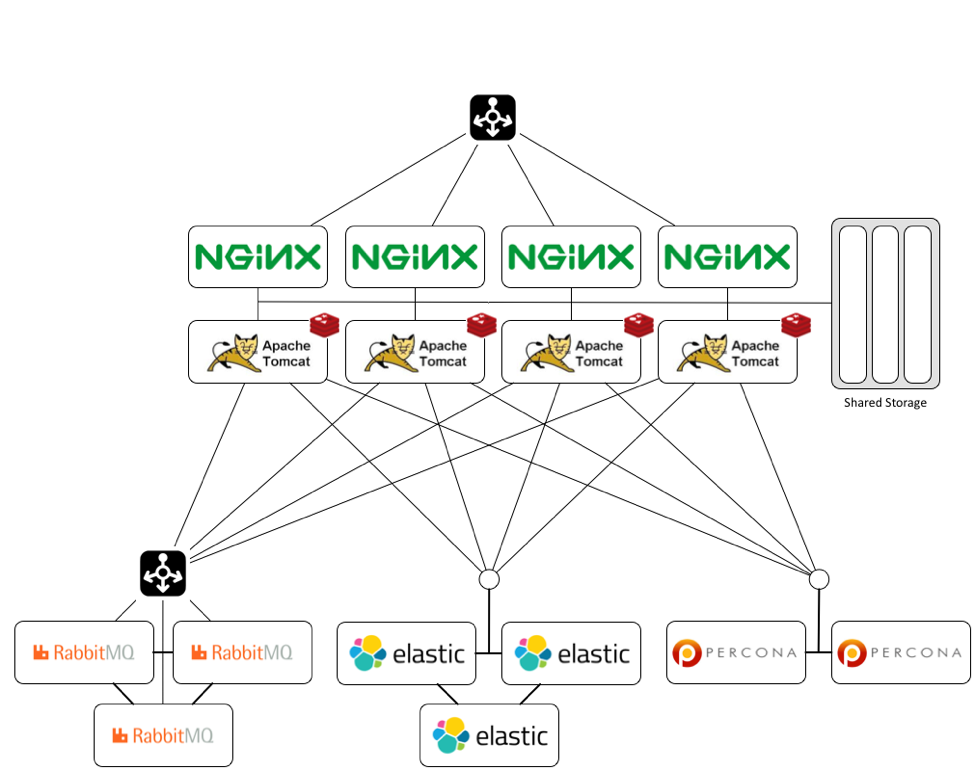

Advanced Configuration¶
|morpheus| provides several more advanced configuration capabilities when operating in tougher network environments.
Proxies¶
Overview¶
In many situations , companies deploy virtual machines in proxy restricted environments for things such as PCI Compliance, or just general security. As a result of this |morpheus| provides out of the box support for proxy connectivity. Proxy authentication support is also provided with both Basic Authentication capabilities as well as NTLM for Windows Proxy environments. |morpheus| is even able to configure virtual machines it provisions to utilize these proxies by setting up the operating systems proxy settings directly (restricted to cloud-init based Linux platforms for now, but can also be done on windows based platforms in a different manner).
To get started with Proxies, it may first be important to configure the
|morpheus| appliance itself to have access to proxy communication for
downloading service catalog images. To configure this, visit the Admin
-> Settings page where a section labeled “Proxy Settings” is located.
Fill in the relevant connection info needed to utilize the proxy. It may
also be advised to ensure that the Linux environment’s http_proxy,
https_proxy, and no_proxy are set appropriately.
Defining Proxies¶
Proxies can be used in a few different contexts and optionally scoped to
specific networks with which one may be provisioning into or on a cloud
integration as a whole. To configure a Proxy for use by the provisioning
engines within |morpheus| we must go to
Infrastructure -> Networks -> Proxies. Here we can create records
representing connection information for various proxies. This includes
the host ip address, proxy port, and any credentials (if necessary)
needed to utilize the proxy. Now that these proxies are defined we can
use them in various contexts.
Cloud Communication¶
When morpheus needs to connect to various cloud APIs to issue provisioning commands or to sync in existing environments, we need to ensure that those api endpoints are accessible by the appliance. In some cases the appliance may be behind a proxy when it comes to public cloud access like Azure and AWS. To configure the cloud integration to utilize a proxy, when adding or editing a cloud there is a setting called “API Proxy” under “Advanced Options”. This is where the proxy of choice can be selected to instruct the Provisioning engine how to communicate with the public cloud. Simply adjust this setting and the cloud should start being able to receive/issue instructions.
Provisioning with Proxies¶
Proxy configurations can vary from operating system to operating system and in some cases it is necessary for these to be configured in the templates as a prerequisite. In other cases it can also be configured automatically. Mostly with the use of cloud-init (which all of our out of the box service catalog utilizes on all clouds). When editing/creating a cloud there is a setting for “Provisioning Proxy” in “Provisioning Options”. If this proxy is set, |morpheus| will automatically apply these proxy settings to the guest operating system.
Overriding proxy settings can also be done on the Network record.
Networks (or subnets) can be configured in
Infrastructure -> Networks or on the Networks tab of the relevant
Cloud detail page. Here, a proxy can also be assigned as well as
additional options like the No Proxy rules for proxy exceptions.
Docker¶
When provisioning Docker based hosts within a Proxy environment it is up to the user to configure the docker hosts proxy configuration manually. There are workflows that can be configured via the Automation engine to make this automatic when creating docker based hosts. Please see documentation on Docker and proxies for specific information.
Proxy setups can vary widely from company to company, and it may be advised to contact support for help configuring morpheus to work in the proxy environment.
High Availability Mode¶
Overview¶
|morpheus| ships as a stand-alone appliance running as a virtual machine in your own environment. This stand-alone appliance contains all the software needed to run |morpheus| and uses a package to distribute the binary files. A configuration utility is also provided to configure the software based on your environment needs. As |morpheus| scales and becomes a more critical component of your infrastructure the stand-alone method does not meet the needs in terms of uptime availability and scalability. We have designed the components that makeup |morpheus| distributable to enable you to deploy it in a multi-tier configuration. This document discusses the possible deployment scenarios and use cases for distributing |morpheus| and increasing its uptime availability.
Each tier described in the following architecture section can be scaled out to increase its availability. To remove the single points of failure from inside the stand-alone appliance you will need to stand up each of the architecture components described in the architecture section. System administration of these components are critical to the success of a highly scaled system including logging and monitoring. The infrastructure setup section goes over the details of setting up the proper infrastructure to allow the application servers to talk to these services directly rather than the internal services created by the installer in a stand-alone configuration.
Architecture¶
|morpheus| contains the following tiers in the stand-alone deployment configuration: web, application, cache, message queue, search index, and database. Each tier can be distributed and deployed on separate servers except for the cache. Currently the cache is localized to each application server and is scheduled for removal in a later release. In addition, there is a shared storage tier which holds artifacts and backup objects.
- Web Tier
- |morpheus| uses Nginx as a reverse proxy for its application tier. It also serves access to the localized package repository used when deploying data nodes and virtual machines providing the |morpheus| agent and utility software.
- Application Tier
- |morpheus| application is written in Groovy and Grails. It can be run on multiple servers behind a web connection load balancer that supports websockets. The application itself runs in a Java virtual machine as an Apache Tomcat container.
- Cache Tier
- Currently |morpheus| uses a caching layer for database requests, this component is scheduled for removal in a future release. A local instance of Redis is used as the cache and is not distributed. The packaged installer will install a local Redis instance to use until the component is removed from the application.
- Message Queue Tier
- |morpheus| uses message queueing to send messages to different components of the application that enable various actions. RabbitMQ is used as the message broker, only the application communicates with the message queue broker. This component is scaled horizontally behind a load balancer so that each application server can connect to the broker using a single DNS name.
- Search Index Tier
- |morpheus| stores activity, backup results, logs, and statistics in an index to enable searching using ElasticSearch. Scaling out ElasticSearch is handled by ElasticSearch itself and does not require a load balancer. Each application server’s configuration contains addresses for each ElasticSearch.
- Database Tier
- |morpheus| use a SQL persistent database; in the stand-alone appliance, it is MySQL. To scale out the database tier setup a SQL compliant database. Each application instance will need write access to the database. Configuring MySQL or Percona database engine in an active/active cluster will allow write access to the |morpheus| database from any application server.
- Shared Storage
- |morpheus| creates artifacts and objects when deploying applications or running backups. These artifacts need to be written to a file system. These objects need to be accessible by any application server they need to exist on a shared storage device. |morpheus| allows you to create storage providers such as a local directory, AWS S3, Swift, or cloud CDNs.
- Infrastructure Setup
- Infrastructure required for the external services should be deployed in a regional manner and should not cross WAN boundaries with high latency links. You can setup the external services in any cloud provider, on-premises internal cloud or data center, or virtual environment. Scaling and performance metrics of the external services are based on recommendations from each service’s owner or community.
Configuration¶
|morpheus| configuration is controlled by a configuration file located at /etc/morpheus/morpheus.rb. This file is read when you run morpheus-ctl reconfigure after installing the appliance package. Each section is tied to a deployment tier: database is mysql, message queue is rabbitmq, serach index is elasticsearch. There are no entries for the web and application tiers since those are part of the core application server where the configuration file resides.
An example configuration file for a distributed |morpheus| deployment:
mysql['enable'] = false
mysql['host'] = {'52.53.240.28' => 10004, '52.53.241.94' => 10004}
mysql['morpheus\_db'] = 'morpheusdb01'
mysql['morpheus\_db\_user'] = 'merovingian' mysql['morpheus\_password'] = 'Wm5n5gXqXCe9v52'
rabbitmq['enable'] = false rabbitmq['vhost'] = 'zion' rabbitmq['queue\_user'] = 'dujour'
rabbitmq['queue\_user\_password'] = '5tfg9n2iBifzW5c'
rabbitmq['host'] = 'rabbitmq-lb01.morpheusdata.com'
rabbitmq['port'] = '10008'
rabbitmq['stomp\_port'] = '10010'
rabbitmq['heartbeat'] = 50
elasticsearch['enable'] = false
elasticsearch['cluster'] = 'nebuchadnezzar'
elasticsearch['es\_hosts'] = {'52.53.214.68' => 10003, '52.53.242.129' => 10003, '52.53.68.67' => 10003} ----
Database Tier¶
|morpheus| will install a local MySQL server in its stand-alone configuration mode. To disable creating the local MySQL server set the entry mysql[‘enable’] = false and add one or more database servers using the mysql[‘host’] entry. This entry is a Ruby hash using hash rocket style syntax since the key contains dots. The key is an IP address or DNS name with the paired value the port the database is listening on. The configuration script for the installer will take the values and turn them into a URL JDBC string that the application will use. Enter the database name and credentials using the entries mysql[‘morpheus_db’], mysql[‘morpheus_db_user’], and mysql[‘morpheus_password’] respectively. The database user requires write access to all tables in the |morpheus| database with the all privileges statement.
Message Queue Tier¶
RabbitMQ is the internal message broker and is created as a single node. RabbitMQ can be scaled out in a cluster configuration and fronted by a load balancer to make it more highly available. The external load balancer is used so that each application server can connect to a single IP address or DNS name. To prevent the local RabbitMQ server creation during setup set the configuration entry rabbitmq[‘enable’] = false and use the three entries rabbitmq[‘host’], rabbitmq[‘port’], and rabbitmq[‘stomp_port’] to the appropriate strings for the external load balancer. The entry for the virtual host is rabbitmq[‘vhost’] and should be set to / or root if no virtual host was created for the RabbitMQ cluster. When using a load balancer fronting a RabbitMQ cluster the heartbeat should be adjusted form the default of 580 seconds to something just shorter than the connection timeout of the load balancer using the entry rabbitmq[‘heartbeat’]. This prevents the connection through the load balancer from closing and causing the associated channels from closing as well in the message broker.
Search Index Tier¶
|morpheus| uses ElasticSearch to store data for searching, a default instance is installed by the stand-alone installer. To provide redundancy and scalability an external ElasticSearch cluster is needed. To disable the creation of the internal ElasticSearch instance set the configuration entry elasticsearch[‘enable’] = false. Provide the cluster name of the external ElasitcSearch cluster using the configuration entry elasticsearch[‘cluster’] and elasticsearch[‘es_hosts’] which is a Ruby hash using hash rocket style syntax since the key contains dots. The key is an IP address or DNS name with the paired value the port the database is listening on.
Note
ElasticSearch v1.6 is currently supported.
Application Secrets¶
|morpheus| creates a secrets file at /opt/morppheus/morphesu-secrets.json on the first run of the installer configuration script. If the file exists, it will use the file and the secrets contained. These entries are generated randomly and are unique to each initial install. To synchronize access between application servers each server needs to have the same secrets file. Depending on the number of external components used, |morpheus| will use some or none of the settings in this file. Secrets are still generated in case a re-configuration after the initial setup requires a shared password for a component.
SSL Certificates¶
The default mode for |morpheus| is to setup the web tier using encryption to provide secure access to |morpheus| over Transport Layer Security (TLS). |morpheus| will generate self-signed certificates if no certificate is provided in the configuration file. To provide your own certificate:
. Copy the private key and certificate to /etc/morpheus/ssl/your_fqdn_name.key and
/etc/morpheus/ssl/your_fqdn_name.crt respectively.
. Edit the configuration file /etc/morpheus/morpheus.rb and add the following entries:
nginx[‘ssl\_certificate’] = ‘path to the certificate file'
nginx[‘ssl\_server\_key’] = ‘path to the server key file'
Important
Both files should be owned by root and only readable by root. If the server certificate is signed by an intermediate then you should include the signing chain inside the certificate file.
In a distributed deployment, an external load balancer routes requests to a pool of web/application servers. Depending on your infrastructure setup the backend pool of servers can operate in TLS mode or non-TLS mode which provides SSL offloading. To simplify the configuration, it is possible to allow the load balancer to connect to each application server using TLS. If your load balancer requires a certificate validation with a known certificate authority, then you can import these custom certificates as described in the previous paragraph. The other option is to enable SSL offloading where the load balancer connects to the application server pool over a non-TLS connection. To setup TLS offloading in the |morpheus| configuration file set the appliance_url to a URL that starts with http instead of https, this instructs the configuration script to not generate the self-singed certificates.
Note
In the configuration file appliance_url does not have an equal sign between the name and value.